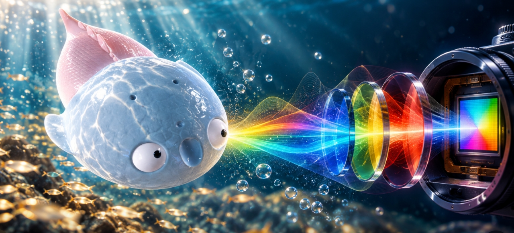

Model the opsin response
A learnable opsin layer transforms hyperspectral input into colour images, modelling a simplified version of visual transduction in the retina.
From Exploring Colour Vision Evolution
to Inspiring Camera Design
Accepted at NeurIPS 2026
* Corresponding author: Lin Gu

What can millions of years of colour vision evolution teach us about designing cameras?
Paleoinspired Vision connects evolutionary biology with machine vision through a learnable model of opsin spectral sensitivity. Recognition performance provides a task-driven measure of evolutionary pressure, allowing us to explore how visual systems adapt to their environments and how these adaptations can inform imaging technology.
A learnable opsin layer transforms hyperspectral input into colour images, modelling a simplified version of visual transduction in the retina.
Evolutionary conservation optimisation uses recognition performance to guide mutation-driven changes in spectral sensitivity.
The learned spectral responses inform task-specific camera filters, connecting biological adaptation with application-driven design.
The evolution of colour vision is captivating, as it reveals the adaptive strategies of extinct species while simultaneously inspiring innovations in modern imaging technology. In this study, we present a simplified model of visual transduction in the retina, introducing a novel opsin layer. We quantify evolutionary pressures by measuring machine vision recognition accuracy on colour images shaped by specific opsins. Building on this, we develop an evolutionary conservation optimisation algorithm to reconstruct the spectral sensitivity of opsins, enabling mutation-driven adaptations to more effectively spot fruits or predators. This model condenses millions of years of evolution into seconds using GPU, providing an experimental framework to test long-standing hypotheses in evolutionary biology, such as vision of early mammals, primate trichromacy from gene duplication, retention of colour blindness, blue-shift of fish rod and multiple rod opsins with bioluminescence.
Beyond validating existing paleontological hypotheses, our model further enables speculative explorations of hypothetical species, such as organisms with visual systems adapted to Martian conditions. These constitute our contributions to AI for life science and neuroscience. Besides, the principles derived from these biological studies can translate into practical engineering solutions. In practice, our findings suggest a minimalist yet effective approach to task-specific camera filter design, optimising the spectral response function to meet application-driven demands.
The framework investigates hypotheses spanning early mammalian vision, primate trichromacy, colour blindness, fish rod blue-shifts and multiple rod opsins in bioluminescent environments. Hypothetical Martian adaptations extend this exploration beyond existing species.
The implementation includes evolutionary visual perception layers (EVPL), a MiT backbone and a SegFormer head for hyperspectral semantic segmentation. Learned spectral sensitivities provide a route toward camera filters tailored to recognition tasks.
The public repository contains model components, experiment configurations, dataset loaders and training entry points. Start with the README for environment setup and data preparation.
git clone https://github.com/luyijie-research/PaleVision.git cd PaleVision conda create -n palevision python=3.10 -y conda activate palevision pip install -r requirements.txt
If you use PaleVision in your research, please cite our NeurIPS 2026 paper:
@inproceedings{lu2026paleoinspired,
title = {Paleoinspired Vision: From Exploring Colour Vision Evolution to Inspiring Camera Design},
author = {Lu, Yijie and Zong, Zhimin and Zhang, Junjie and Su, Shenghan and Zhao, Zeyun and Cui, Ziteng and Pu, Yan and Lu, Jing and Kojima, Daisuke and Gu, Lin and Fang, Ruogu},
booktitle = {Advances in Neural Information Processing Systems},
year = {2026},
url = {https://luyijie-research.github.io/PaleVision/}
}